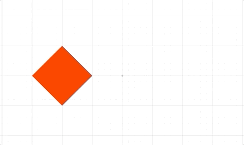
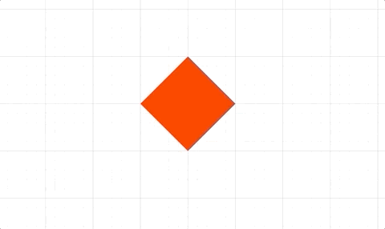
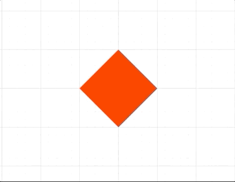
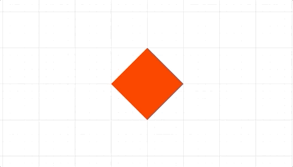

Animation API Reference
Contents
- AnimationBuilder
- AnimationManager
- CustomAnimationStep
- DelayAnimationStep
- ColorAnimationStep
- DimAnimationStep
- UndimAnimationStep
- OpacityAnimationStep
- DissolveInAnimationStep
- DissolveOutAnimationStep
- PositionAnimationStep
- PulseAnimationStep
- RotationAnimationStep
- ScaleAnimationStep
- ScenarioAnimationStep
- TransformAnimationStep
- SerialAnimationStep
- TriggerAnimationStep
AnimationBuilder
Extends SerialAnimationStep
Animation Builder
Convenient way to build animation steps in serial. Each step returns the same builder object, and so chaining in a fluent like API can be achieved.
Example 1
p.animations.new()
.delay(1)
.position({ target: [1, 0], duration: 2 })
.delay(1)
.rotation({ target: Math.PI, duration: 2 })
.start();
AnimationManager
Animation Manager
This class manages animations and creates animation steps for use in animations.
Each FigureElement has its own AnimationManager in the
animations property, though any
animation manager can animate any other element. Therefore all parallel
animations can go through the same manager, or be spread throughout
different element's animation managers. Spread animations out between
elements, or keeping them all in one AnimationManager can change how
readable code is, how convenient it is to cancel running animations, and
what order the animations are performed in (AnimationManagers tied
to elements drawn earlier will perform their animation steps before those
tied to elements drawn later). AnimationManagers will only be processed
on each animation frame if the element they are tied to is not hidden.
The animations property within AnimationManager is simply an array that
contains a number AnimationSteps that are executed in parallel.
Typically, these steps would themselves be SerialAnimationSteps or a
series of animations. This means the animation manager is running a number of
animation series in parallel.
The AnimationManagers on FigureElements should be used instead
of instantiating this class separately, as those on FigureElements will
be automatically processed every animation frame.
@param
Properties
At its heart the AnimationManager is just executing
// an array of animation steps.
// Create animation steps
const position = new Fig.Animation.PositionAnimationStep({
element: p,
target: [1, 0],
duration: 2,
});
const rotation = new Fig.Animation.RotationAnimationStep({
element: p,
target: Math.PI,
duration: 2,
});
// Combine the animations into a SerialAnimationStep
const series = new Fig.Animation.SerialAnimationStep([
position,
rotation,
]);
// Add the animations to the animation manager and start
p.animations.animations.push(series);
p.animations.start();
Using the new method in AnimationManager creates a convenient
// `AnimationBuilder` which extends a `SerialAnimationStep` by using
// a fluent API pattern
//
// Create animation steps
const position = new Fig.Animation.PositionAnimationStep({
element: p,
target: [1, 0],
duration: 2,
});
const rotation = new Fig.Animation.RotationAnimationStep({
element: p,
target: Math.PI,
duration: 2,
});
// Build and start the animation
p.animations.new()
.then(position)
.then(rotation)
.start();
AnimationSteps can also be created from the AnimationManager
// with the added convenience that the `FigureElement` that
// has the `AnimationManager` will be used as the default
// `element` property. This combined with the `AnimationBuilder`
// makes defining most animations clean and readable code
// Build and start the animation
p.animations.new()
.position({ target: [1, 0], duration: 2 })
.rotation({ target: Math.PI, duration: 2 })
.start();
Parallel animations however still need to use explicit animation steps.
// Creating the steps from the `AnimationManager` means the `element` doesn't
// need to be defined.
//
p.animations.new()
.inParallel([
p.animations.position({ target: [1, 0], duration: 2 }),
p.animations.rotation({ target: Math.PI, duration: 2 })
])
.start();
FigureElement
AnimationBuilder
CustomAnimationStep
Extends AnimationStep
Custom animation step

Custom animation steps are useful for orchestrating complex animations, or performing non-linear animations.
This step will execute a custom callback function on each animation frame.
Custom animations can either have finite duration or infinite
(duration = null). If finite, the callback function will be passed
percentage progress through the duration. If infinite, the callback function
will be passed the delta time from the start of the animation.
The animation can be stopped at any time by returning true from the
callback funciton/
For finite durations, the percentage progress can either be linear with
time, or non-linear.
Built-in non-linear progressions are 'easeinout', 'easein' and
'easeout' which will slow progress at the start and/or end of the
animation. A function to create a custom non-linear progressor can also be
used.
@param {OBJ_CustomAnimationStep} options
Move an object through a sine wave of wavelength 1 from
// x = -1 to x = 1
function sine(percentComplete) {
const x = -1 + percentComplete * 2;
const y = 0.5 * Math.sin(Math.PI * 2 * x);
p.setPosition(x, y);
}
p.animations.new()
.custom({ callback: sine, duration: 5 })
.start();
Animate a object in a circle indefinitely at a frequency of 0.1Hz
p.animations.new()
.custom({
callback: (t) => {
const x = 0.5 * Math.cos(2 * Math.PI * 0.1 * t);
const y = 0.5 * Math.sin(2 * Math.PI * 0.1 * t);
p.setPosition(x, y);
},
duration: null,
})
.start();
To test examples, append them to the boilerplate
DelayAnimationStep
Extends AnimationStep
Delay animation step
While all animations steps accept a delay property, having this step sometimes makes the animation seem more readable.
@param {number | OBJ_AnimationStep} delayOrOptions
ColorAnimationStep
Extends ElementAnimationStep
Color animation Step

By default, the color will start with the element's current color.
Use either delta or target to define the end color
In an interactive figure, it is often useful to highlight elements of the figure by coloring them and greying out, or dimming the elements not of interest. As such, a FigureElement has several color attributes:
- color - current color
- dimColor - color to dim to
- defaultColor - color to undim to
The target property can accept 'dim' and 'undim' as shortcuts to dim
or undim the element.
In addition, the DimAnimationStep and UndimAnimationStep can be used to do the same, which is especially useful when trying to build easy to read code in a complex animation.
@param {OBJ_ColorAnimationStep} options
Using duration
p.animations.new()
.color({ target: [0, 0, 1, 1], duration: 1 })
.color({ target: [0, 0.8, 0, 1], duration: 1 })
.color({ target: [1, 0, 0, 1], duration: 1 })
.start();
dim and undim an element using dim and undim animation steps
p.animations.new()
.dim(1)
.delay(1)
.undim(1)
.start();
Different ways to create a stand-alone step
const step1 = p.animations.color({
target: [0, 0, 1, 1],
duration: 2,
});
const step2 = new Fig.Animation.ColorAnimationStep({
element: p,
target: [0, 0.8, 0, 1],
duration: 2,
});
p.animations.new()
.then(step1)
.then(step2)
.start();
To test examples, append them to the boilerplate
DimAnimationStep
Extends ColorAnimationStep
Dim color animation step

Animates color of element to the dimColor property of FigureElement
@param {number | OBJ_ElementAnimationStep} durationOrOptions
Simple dim
p.animations.new()
.dim(2)
.start();
Dim using options object
p.animations.new()
.dim({ delay: 1, duration: 2 })
.start();
Different ways to create a stand-alone step
const step1 = p.animations.dim(2);
const step2 = new Fig.Animation.DimAnimationStep({
element: p,
duration: 2,
});
p.animations.new()
.then(step1)
.undim(1)
.then(step2)
.start();
To test examples, append them to the boilerplate
UndimAnimationStep
Extends ColorAnimationStep
Undim color animation step

Animates color of element to the defaultColor property of FigureElement
@param {number | OBJ_ElementAnimationStep} durationOrOptions
Simple undim
p.dim();
p.animations.new()
.undim(2)
.start();
Undim using options object
p.dim();
p.animations.new()
.undim({ delay: 1, duration: 2 })
.start();
Different ways to create a stand-alone step
const step1 = p.animations.undim(2);
const step2 = new Fig.Animation.UndimAnimationStep({
element: p,
duration: 2,
});
p.dim();
p.animations.new()
.then(step1)
.dim(1)
.then(step2)
.start();
To test examples, append them to the boilerplate
OpacityAnimationStep
Extends ElementAnimationStep
Opacity Animation Step

A FigureElement has color and opacity properties. The color
property has an alpha channel that defines opacity, but it should be used
as a base color definition, and not used to dissolve an element in and out.
Therefore, to animate an element's opacity or temporarily dissolve in or out an element, use an opacity animation step.
The opacity is multiplied by the
color alpha channel to get the final opacity of the element.
By default, the opacity will start with the FigureElement's current
opacity unless dissolving. If dissolving, the opacity will start at 0 if
dissolving in, or 1 if dissolving out unless dissolveFromCurrent is
true in which case the opacity will start from the current opacity.
The DissolveInAnimationStep and DissolveOutAnimationStep
extend the OpacityAnimationStep to make it even more convenient to
dissolve.
@param {OBJ_OpacityAnimationStep} options
Using numerical values for opacity
p.animations.new()
.opacity({ target: 0.4, duration: 2 })
.opacity({ target: 1, duration: 2 })
.start();
Dissolve out then in
p.animations.new()
.opacity({ dissolve: 'out', duration: 2 })
.opacity({ dissolve: 'in', duration: 2 })
.start();
Using the dissolve animation step
p.animations.new()
.dissolveOut(2)
.dissolveIn({ delay: 1, duration: 2 })
.start();
Different ways to create a stand-alone step
const step1 = p.animations.opacity({
target: 0,
duration: 2,
});
const step2 = new Fig.Animation.OpacityAnimationStep({
element: p,
target: 1,
duration: 2,
});
const step3 = p.animations.dissolveOut({
duration: 2,
});
const step4 = new Fig.Animation.DissolveInAnimationStep({
element: p,
duration: 2,
});
p.animations.new()
.then(step1)
.then(step2)
.then(step3)
.then(step4)
.start();
To test examples, append them to the boilerplate
DissolveInAnimationStep
Extends OpacityAnimationStep
Dissolve in animation step

Animates opacity of element to dissolve in.
@param {number | OBJ_ElementAnimationStep} durationOrOptions
Simple dissolve in
p.setOpacity(0)
p.animations.new()
.dissolveIn(2)
.start();
Dissolve in using options object
p.setOpacity(0);
p.animations.new()
.dissolveIn({ delay: 1, duration: 2 })
.start();
Different ways to create a stand-alone step
const step1 = p.animations.dissolveIn(2);
const step2 = new Fig.Animation.DissolveInAnimationStep({
element: p,
duration: 2,
});
p.setOpacity(0);
p.animations.new()
.then(step1)
.dissolveOut(1)
.then(step2)
.start();
To test examples, append them to the boilerplate
DissolveOutAnimationStep
Extends OpacityAnimationStep
Dissolve out animation step

Animates opacity of element to dissolve out.
@param {number | OBJ_ElementAnimationStep} durationOrOptions
Simple dissolve out
p.animations.new()
.dissolveOut(2)
.start();
Dissolve out using options object
p.animations.new()
.dissolveOut({ delay: 1, duration: 2 })
.start();
Different ways to create a stand-alone step
const step1 = p.animations.dissolveOut(2);
const step2 = new Fig.Animation.DissolveOutAnimationStep({
element: p,
duration: 2,
});
p.animations.new()
.then(step1)
.dissolveIn(1)
.then(step2)
.start();
To test examples, append them to the boilerplate
PositionAnimationStep
Extends ElementAnimationStep
Position animation step
The position animation step animates the first Translation transform in the FigureElement's Transform.
By default, the position will start with the element's current position.
Use either delta or target to define it's end point.
The path of travel between start and target can either be a straight
line ('linear') or a quadratic bezier curve ('curve')
For custom paths, the CustomAnimationStep can be used.
@param {OBJ_PositionAnimationStep} options
Using duration
p.animations.new()
.position({ target: [1, 0], duration: 2 })
.start()
Using velocity
p.animations.new()
.position({ target: [1, 0], velocity: 0.5 })
.start()
Linear and curved path
p.animations.new()
.delay(1)
.position({ target: [1, 0], duration: 2 })
.position({
target: [0, 0],
duration: 2,
path: {
style: 'curve',
magnitude: 0.8,
direction: 'up',
},
})
.start();
Different ways to create a stand-alone step
const step1 = p.animations.position({ target: [1, 0], duration: 2 });
const step2 = new Fig.Animation.PositionAnimationStep({
element: p,
target: [0, 0],
duration: 2,
});
p.animations.new()
.then(step1)
.then(step2)
.start();
To test examples, append them to the boilerplate
PulseAnimationStep
Extends ElementAnimationStep
Pulse animation step

The pulse animation step animates a pulse.
The options are the same as those in the * pulse method.
@param {OBJ_PulseAnimationStep} options
Scale pulse, rotation pulse and translation pulse
p.animations.new()
.pulse({
scale: 1.5,
duration: 1,
})
.pulse({
duration: 1,
rotation: 0.15,
frequency: 4,
})
.pulse({
duration: 1,
translation: 0.02,
min: -0.02,
frequency: 4,
})
.start();
Different ways to create a stand-alone step
const step1 = p.animations.pulse({
scale: 1.5,
duration: 1,
});
const step2 = new Fig.Animation.PulseAnimationStep({
element: p,
rotation: 0.15,
frequency: 4,
});
p.animations.new()
.then(step1)
.then(step2)
.start();
To test examples, append them to the boilerplate
RotationAnimationStep
Extends ElementAnimationStep
Rotation animation step

The rotation animation step animates the first Rotation transform in the FigureElement's Transform.
By default, the rotation will start with the element's current rotation.
Use either delta or target to define it's end point
@param {OBJ_RotationAnimationStep} options
Using duration
p.animations.new()
.rotation({ target: Math.PI, duration: 2 })
.start();
Using velocity
p.animations.new()
.rotation({ target: Math.PI, velocity: Math.PI / 2 })
.start();
Different ways to create a stand-alone step
const step1 = p.animations.rotation({ target: Math.PI, duration: 2 });
const step2 = new Fig.Animation.RotationAnimationStep({
element: p,
target: 0,
duration: 2,
});
p.animations.new()
.then(step1)
.then(step2)
.start();
To test examples, append them to the boilerplate
ScaleAnimationStep
Extends ElementAnimationStep
Scale Animation Step
The scale animation step animates the first Scale transform in the FigureElement's Transform.
By default, the scale will start with the element's current scale.
Use either delta or target to define it's end point.
Scale can be defined as either a point or number. If number, both x and y scale terms will be the same.
@param {OBJ_ScaleAnimationStep} options
Using duration
p.animations.new()
.scale({ target: 2, duration: 2 })
.start();
Using velocity
p.animations.new()
.scale({ target: 2, velocity: 0.5 })
.start();
Different ways to create a stand-alone step
const step1 = p.animations.scale({ target: 1.5, duration: 2 });
const step2 = new Fig.Animation.ScaleAnimationStep({
element: p,
target: 1,
duration: 2,
});
p.animations.new()
.then(step1)
.then(step2)
.start();
To test examples, append them to the boilerplate
ScenarioAnimationStep
Extends ElementAnimationStep
Scenario Animation Step

A scenario defines an element's transform and color and can be used to make code more readable and reusable.
By default, the scenario will start with the element's current transform and color.
@param {OBJ_ScenarioAnimationStep} options
NOTE - use these scenario definitions for all examples below
p.scenarios['center'] = { position: [0, 0], scale: [1, 1], color: [1, 0, 0, 1] };
p.scenarios['right'] = { position: [1, 0], scale: [2, 1], color: [0, 0, 1, 1] };
p.scenarios['bottom'] = { position: [0, -0.5], scale: [0.5, 1], color: [0, 0.5, 0, 1] };
Using duration
p.animations.new()
.scenario({ target: 'right', duration: 2 })
.scenario({ target: 'bottom', duration: 2 })
.scenario({ target: 'center', duration: 2 })
.start();
Using velocity
p.animations.new()
.scenario({
target: 'right',
velocity: { position: 0.5, scale: 0.2 },
})
.scenario({ target: 'bottom', velocity: { position: 0.5 } })
.scenario({ target: 'center', velocity: { color: 0.2 } })
.start();
Different ways to create a stand-alone step
const step1 = p.animations.scenario({
target: 'right',
duration: 2,
});
const step2 = new Fig.Animation.ScenarioAnimationStep({
element: p,
target: 'bottom',
duration: 2,
});
p.animations.new()
.then(step1)
.then(step2)
.start();
To test examples, append them to the boilerplate
TransformAnimationStep
Extends ElementAnimationStep
Transform Animation Step

By default, the transform will start with the element's current transform.
A Transform chains many transform links where each link might be a Rotation, Scale or Translation transform.
start, target and delta should have the same order of transform links
as the element's transform.
The TransformAnimationStep will animate each of these links with the
same duration. If velocity is used to calculate the duration, then the link
with the longest duration will define the duration of the animation.
velocity can either be a transform with the same order of transform links
as the element or it can be a constant value, which will be applied to
all transform links. velocity cannot be 0.
Use either delta or target to define it's end point of the animation.
@param {OBJ_TransformAnimationStep} options
Using duration
p.animations.new()
.transform({
target: new Fig.Transform().scale(2, 2).rotate(0.5).translate(1, 0),
duration: 2,
})
.start();
Using velocity as a transform
p.animations.new()
.transform({
target: new Fig.Transform().scale(2, 2).rotate(0.5).translate(1, 0),
velocity: new Fig.Transform().scale(0.5, 0.5).rotate(0.25).translate(0.5, 0.5),
})
.start();
Using velocity as a number
p.animations.new()
.transform({
target: new Fig.Transform().scale(2, 2).rotate(0.5).translate(1, 0),
velocity: 0.5,
})
.start();
Using TypeParsableTransform as transform definition
p.animations.new()
.transform({
target: [['s', 1.5, 1.5], ['r', 0.5], ['t', 1, 0]],
duration: 2,
})
.start();
Different ways to create a stand-alone step
const step1 = p.animations.transform({
target: [['s', 1.5, 1.5], ['r', 1], ['t', 1, 0]],
duration: 2,
});
const step2 = new Fig.Animation.TransformAnimationStep({
element: p,
target: [['s', 1, 1], ['r', 0], ['t', 0, 0]],
duration: 2,
});
p.animations.new()
.then(step1)
.then(step2)
.start();
To test examples, append them to the boilerplate
SerialAnimationStep
Extends AnimationStep
Execute an array of AnimationSteps in series.

Often the AnimationBuilder class which extends
SerialAnimationStep can be used to create serial animations
in a more clean way.
@param {Array
Using a SerialAnimation step can be cumbersome, but
// can be useful if modularizing animations between files
const Rot = Fig.Animation.RotationAnimationStep;
const Delay = Fig.Animation.DelayAnimationStep;
const Pos = Fig.Animation.PositionAnimationStep;
const series = new Fig.Animation.SerialAnimationStep([
new Rot({ element: p, target: Math.PI / 2, duration: 2 }),
new Delay({ duration: 0.2 }),
new Rot({ element: p, target: Math.PI, duration: 2 }),
new Delay({ duration: 0.2 }),
new Rot({ element: p, target: 0, direction: -1, duration: 1.3, progression: 'easein' }),
new Pos({ element: p, target: [1, 0], duration: 2, progression: 'easeout' }),
]);
p.animations.animations.push(series);
p.animations.start()
Same animation but with AnimationBuilder (which is an extension of
// `SerialAnimationStep`)
p.animations.new()
.rotation({ target: Math.PI / 2, duration: 2 })
.delay(0.2)
.rotation({ target: Math.PI, duration: 2 })
.delay(0.2)
.rotation({ target: 0, duration: 1, direction: -1, progression: 'easein' })
.position({ target: [1, 0], duration: 2, progression: 'easeout' })
.start();
To test examples, append them to the boilerplate
TriggerAnimationStep
Extends AnimationStep
Trigger Animation Step

A trigger step executes a custom function
A delay will delay the triggering of the custom function
while duration will pad time at the end of the trigger before
the animation step finishes.
@param {OBJ_TriggerAnimationStep | function(): void} options
Simple trigger
p.animations.new()
.position({ target: [1, 0], duration: 2 })
.trigger(() => { console.log('arrived at (1, 0)') })
.position({ target: [0, 0], duration: 2 })
.trigger(() => { console.log('arrived at (0, 0)') })
.start();
Trigger with delay, duration and payload
const printPosition = (pos) => {
console.log(`arrived at ${pos}`);
};
p.animations.new()
.position({ target: [1, 0], duration: 2 })
.trigger({
delay: 1,
callback: printPosition,
payload: '(1, 0)',
duration: 1,
})
.position({ target: [0, 0], duration: 2 })
.trigger({ callback: printPosition, payload: '(0, 0)' })
.start();
Different ways to create a stand-alone step
const step1 = p.animations.trigger({
callback: () => { console.log('arrived at (1, 0)') },
});
const step2 = new Fig.Animation.TriggerAnimationStep({
callback: () => { console.log('arrived at (0, 0)') },
});
p.animations.new()
.position({ target: [1, 0], duration: 2 })
.then(step1)
.position({ target: [0, 0], duration: 2 })
.then(step2)
.start();
To test examples, append them to the boilerplate